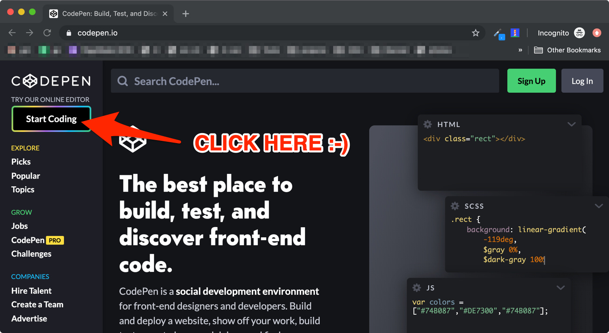
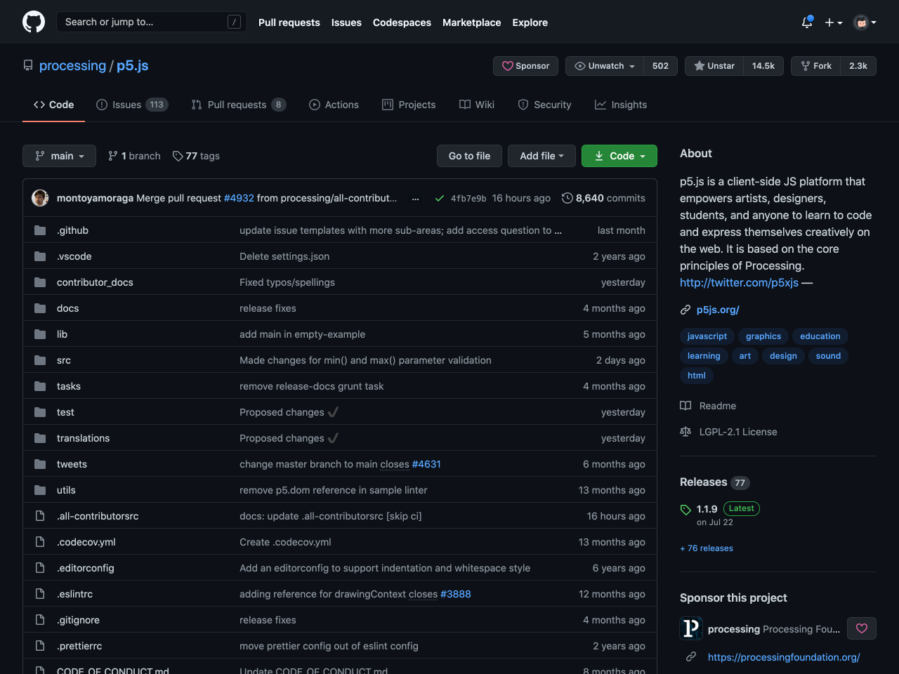
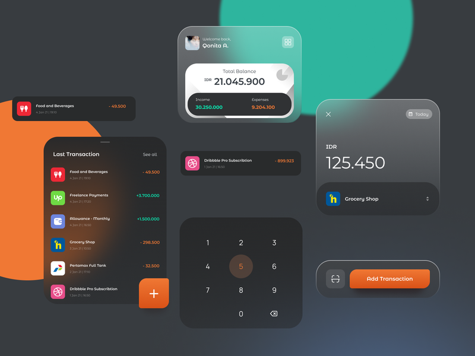
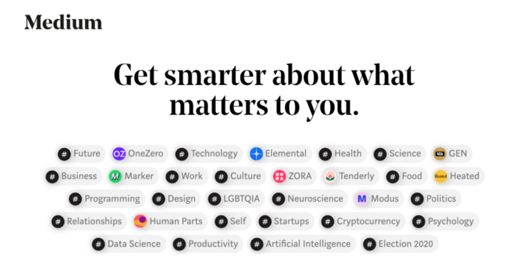

Promoting yourself as a Front-End Developer
07 March, 2021
Sebastian Opperman
It's essential to stand out as a Front-End Developer nowadays.
Preparing a basic CV with the relevant front-end skills won't
get you noticed by a recruiter or technical manager. Most web
developers today don't have a degree in Computer Science and
highly depend on work experience to get ahead in their careers.
Before you try to sell yourself as a FED, make sure you have
what it takes to become a good developer. What makes a great
Front-End Developer? Firstly, having a clear and extensive
exper

Before you try to sell yourself as a FED, make sure you have what it takes to become a good developer.
What makes a great Front-End Developer?
Firstly, having a clear and extensive experience in working with HTML, CSS, and JavaScript. It is strongly advised to have a good understanding of design. Some of the best Front-End Developers out there have a background in UI/UX design and possess skills in creative problem-solving.
Having an understanding of back-end development will help you go far as a Front-End Developer. Even if you're only working with the endpoints from the back-end, knowing what goes on under the hood of the API will help you develop your applications for scalability.
So with these points in place, what can you do to sell your experience and skills to potential employers? There are a few platforms that help Front-End Developers to promote their expertise.
Codepen
 CodePen is an online editor sandbox for Front-End Developers. You can create a Pen, which are little projects using HTML, CSS, and JavaScript. Pens can be configured to include any libraries and preprocessors. One of my favourite features of CodePen is the Picked Pens section. You immediately see this when you land on the homepage. Your pen grows more popular by getting more views and likes. Add your best pens to your showcase, which you can add to your portfolio or show to an employer.
Github
 Github is the leading platform for open-source software. Contributing to open-source shows an employer that you work well with other developers and showcases projects and code you have written in the past. You can check this guide for how to start contributing to open-source software. You can also host your portfolio website on Github using Github Pages.
Portfolio Website
Your website should tell employers a little about yourself. You should have links to all your platforms and a means for people to contact you. Most importantly, it should list the projects that you want employers to see. Remember that the portfolio needs to reflect the skills you are trying to sell. Make sure it works well on mobile, check that information is properly structured, and it looks clean and impressive.
Dribble
 Dribbble is a great place for developers with skills in UI design. It works much like CodePen, using shots rather than pens. Design shots for Dribbble, then create pens on CodePen. You will need an invitation to post shots on Dribbble. You can get one by asking a friend or colleague to send you one. You can also sign up for a Pro account or submit shots as drafts for review to receive an invitation.
Medium
 Medium for writing articles and tutorials. Writing indicates thought leadership in your field. Your posts can help other developers who are on the same path as you.
Conclusion
When relying on your experience as a Front-End Developer, showcasing projects and work you have done is essential to stand out. Make your website has links to all your platforms.